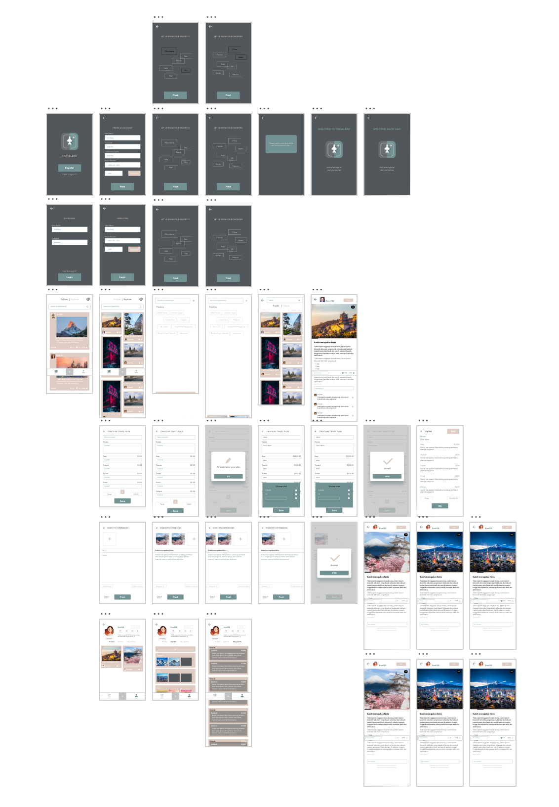

Explore the Travelers' App
Explore the Travelers' App


Tools used
Adobe XD, Illustrator, After Effects, Photoshop
Design Hypothesis
I believe that there should be a cell phone app that allows the users who would like to travel in the near future to be able to read other people’s experiences before actually deciding where to go for traveling. So that they can make better traveling plans and be aware of the things they may not know well before.
Needfinding
Based on my needfinding, I organized a few points to be considered in my design :
User Personas
Name: Corie Liu
Age: 23
Description: Graduated from The University of Miami majoring in accounting and economics.
Nationality: Japan
Goal: Trying to decide two places out of ten to travel before pursuing a master’s degree
Narrative: Corie loves to travel, however, she didn’t have much time when she was in college since she was studying hard for her dual degree. She was always taking lots of classes during winter session and summer break so that she could graduate on time. Now that she’s graduated, she finally has time to go somewhere without having to worry about homework and exams, she faced another problem. She doesn’t know where to travel. She had so many places in mind but the problem is that is cannot go to every single one of them. She has to pick two out of the ten places in her mind. Doing research on Baidu and Google is very exhausting. She feels like she’s been seeing review articles from people who haven’t even been to those places before. She doesn’t feel like trusting those links which pop up at first when she searches on Google. She needs more reliable advice/information from people who got the real feeling of those places.
Name: Michael Davis
Age: 19
Description: Pursuing a Bachelor’s Degree in the University of Minnesota, majoring in Computer Science and Engineering.
Nationality: American
Goal: Trying to make a budget plan of his California trip which happens in a month.
Narrative: Michael always wanted to go to California with his friend Ian. They are both college students so they don’t have much money to put on their California trip. For example, he couldn’t decide which part of LA he should live to save money on transportation. He had many famous places in mind to visit in LA but he couldn’t organize all of them to make a plan which works out the best. He needs to see what other people do to make the most out of their trips to LA, their plans, their stays, and their experiences. He doesn’t need perfectly written published articles, all he needs is real experiences and plans shared by other people who have similar situations as him.
User Stories
Stage 1
| As a recurring user, I want to login to retrieve my saved lists |
| As a general user, I want to use the app to search and explore for places to travel |
| As a general user, I want to be able to like and comment on the posts that I’m interested in |
| As a recurring user, I want to save experiences other users have posted to lists |
| As a user who have a targeted place to travel , I want to make my travel plans within the app |
| As a user who's already traveled and would like to share the experience, I want to be able to share my own travel experiences within the app |
Stage 2
| As a recurring user, I want to login to retrieve my saved lists |
| As a user I would like to see the travel plans I have created even from other devices |
| As a user I would like to retrieve my favorites |
| As a user I would like to see other people’s traveling experiences photos/videos with text description |
| I would be able to know the culture, famous places to visit, best restaurants, best stays based on other people’s experience |
| I would be able to pick a place to travel based on one certain thing I have in mind, for example, if I search mountains, there will be posts of people going to different mountains of different places so that I can pick one |
| I would like to be able to see what I have liked before through my profile page |
| I would want to see the ranking of my search based on the amount of likes the posts are getting |
Deliverables
| Register/Login→ pick favorite types of destinations/countries → search/feed view, profile, create |
| Search → type in desired destination |
| Feed → scrolling through the posts and being able to click to read the text or view more photos → like the post/ comment/ save post to own list |
| Profile → saved lists/ own posts → edit lists/ own posts |
| Create → create own experiences/ create travel plans |
| Create own experiences → adding videos or photos → adding description |
| Create travel plans → save and compare |
Click on the bar on the top of the page to experience the App
Typography & Colors

40 Screens
Key Features